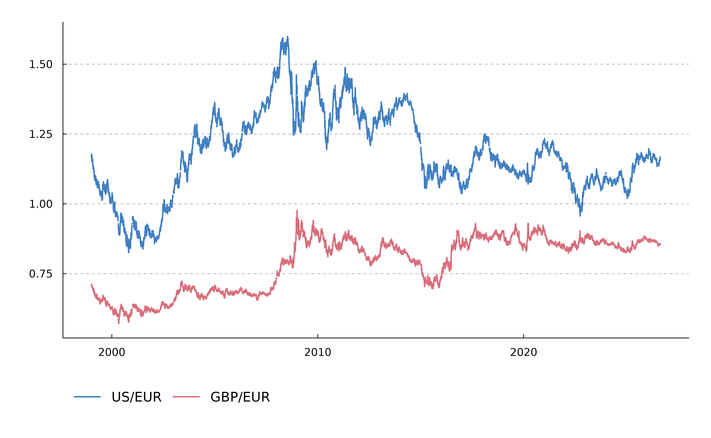

These functions load BdE time series from the bulk CSV files published by Banco de España.
bde_series_load() extracts one or more series by their stable sequential
number. bde_series_full_load() loads a complete bulk CSV file and returns
all series included in that file.
A series alias is a positional code that identifies the location, column or row of a series in a table. An alias is unique within its context but is not stable because it may change when a series moves.
A single time series may appear in different tables, so it can have several
aliases. Use bde_series_full_load() when you need to work with aliases or
load a complete file.
Usage
bde_series_load(
series_code,
series_label = NULL,
out_format = "wide",
parse_dates = TRUE,
parse_numeric = TRUE,
cache_dir = NULL,
update_cache = FALSE,
verbose = FALSE,
extract_metadata = FALSE
)
bde_series_full_load(
series_csv,
parse_dates = TRUE,
parse_numeric = TRUE,
cache_dir = NULL,
update_cache = FALSE,
verbose = FALSE,
extract_metadata = FALSE
)Arguments
- series_code
Numeric vector of stable BdE sequential numbers, or values coercible with
base::as.double(), from theNúmero secuencialfield of the corresponding series. This is not the API series code. Seebde_catalog_load().- series_label
Optional character string or vector of labels to assign to the extracted series.
- out_format
Output format, either
"wide"or"long". See Value for details and the Examples section.- parse_dates
Logical. If
TRUE, date columns are parsed withbde_parse_dates().- parse_numeric
Logical. If
TRUE, parse columns as double values. See Note.- cache_dir
Path to a cache directory. The directory can also be set with
options(bde_cache_dir = "path/to/dir").- update_cache
Logical. If
TRUE, the requested file is refreshed incache_dir.- verbose
Logical. If
TRUE, display information useful for debugging.- extract_metadata
Logical. If
TRUE, return metadata for the requested series.- series_csv
Bulk CSV file name for a series, as defined in the field
Nombre del archivo con los valores de la serieof the corresponding catalog. Seebde_catalog_load().
Value
bde_series_load() returns a tibble with a Date column:
With
out_format = "wide", each series is presented in a separate column with the name defined byseries_label.With
out_format = "long", the tibble has two additional columns:serie_name, with the label of each series andserie_value, with the corresponding value.
"wide" format is more suitable for exporting to a CSV file, while
"long" format is more suitable for creating plots with
ggplot2::ggplot(). See also tidyr::pivot_longer() and
tidyr::pivot_wider().
bde_series_full_load() returns a tibble with a Date
column and the aliases of the time series columns as described in catalog
metadata. See bde_catalog_load() and
vignette("csv_manual", package = "tidyBdE") for details.
Note
These functions attempt to parse columns as double values. For some time
series, a warning may be displayed if parsing fails. Set
parse_numeric = FALSE to disable numeric parsing.
Series identifiers
Banco de España identifies each series with a stable sequential number
(Número secuencial) in bulk CSV files and an API series code
(Nombre_de_la_serie) in the Statistics web service.
bde_series_load() accepts stable sequential numbers in series_code.
bde_series_api_latest() and bde_series_api_load() use the same argument
for API series codes. Use bde_catalog_load() or bde_catalog_search() to
find both identifiers.
See also
bde_catalog_load() and bde_catalog_search() for finding stable
sequential numbers, and bde_indicators() for convenience wrappers.
Time series functions:
bde_series_api
Examples
# \donttest{
# Show metadata.
bde_series_load(573234, verbose = TRUE, extract_metadata = TRUE)
#> ℹ Using temporary cache directory /tmp/Rtmp5Ccwg9.
#> ✔ Using cached catalog "BE".
#> ✔ Using cached catalog "SI".
#> ✔ Using cached catalog "TC".
#> ✔ Using cached catalog "TI".
#> ✔ Using cached catalog "PB".
#> ℹ Parsing date columns.
#> ℹ Extracting series 573234.
#> ℹ Downloading series 573234 from file TC_1_1.csv (alias "TC_1_1.1").
#> ℹ Using temporary cache directory /tmp/Rtmp5Ccwg9/TC.
#> ℹ Downloading file from <https://www.bde.es/webbe/es/estadisticas/compartido/datos/csv/tc_1_1.csv>.
#> # A tibble: 6 × 2
#> Date `573234`
#> <chr> <chr>
#> 1 CÓDIGO DE LA SERIE DTCCBCEUSDEUR.B
#> 2 NÚMERO SECUENCIAL 573234
#> 3 ALIAS DE LA SERIE TC_1_1.1
#> 4 DESCRIPCIÓN DE LA SERIE Tipo de cambio. Dólares estadounidenses por euro …
#> 5 DESCRIPCIÓN DE LAS UNIDADES Dólares de Estados Unidos por Euro
#> 6 FRECUENCIA LABORABLE
# Load data.
bde_series_load(573234, extract_metadata = FALSE)
#> # A tibble: 7,164 × 2
#> Date `573234`
#> <date> <dbl>
#> 1 1999-01-04 1.18
#> 2 1999-01-05 1.18
#> 3 1999-01-06 1.17
#> 4 1999-01-07 1.16
#> 5 1999-01-08 1.17
#> 6 1999-01-11 1.16
#> 7 1999-01-12 1.15
#> 8 1999-01-13 1.17
#> 9 1999-01-14 1.17
#> 10 1999-01-15 1.16
#> # ℹ 7,154 more rows
# Load multiple series.
bde_series_load(c(573234, 573214),
series_label = c("US/EUR", "GBP/EUR"),
extract_metadata = TRUE
)
#> # A tibble: 6 × 3
#> Date `US/EUR` `GBP/EUR`
#> <chr> <chr> <chr>
#> 1 CÓDIGO DE LA SERIE DTCCBCEUSDEUR.B DTCCBCEG…
#> 2 NÚMERO SECUENCIAL 573234 573214
#> 3 ALIAS DE LA SERIE TC_1_1.1 TC_1_1.4
#> 4 DESCRIPCIÓN DE LA SERIE Tipo de cambio. Dólares estadounidenses… Tipo de …
#> 5 DESCRIPCIÓN DE LAS UNIDADES Dólares de Estados Unidos por Euro Libras e…
#> 6 FRECUENCIA LABORABLE LABORABLE
wide <- bde_series_load(c(573234, 573214),
series_label = c("US/EUR", "GBP/EUR")
)
# Show wide output.
wide
#> # A tibble: 7,164 × 3
#> Date `US/EUR` `GBP/EUR`
#> <date> <dbl> <dbl>
#> 1 1999-01-04 1.18 0.711
#> 2 1999-01-05 1.18 0.712
#> 3 1999-01-06 1.17 0.708
#> 4 1999-01-07 1.16 0.706
#> 5 1999-01-08 1.17 0.709
#> 6 1999-01-11 1.16 0.704
#> 7 1999-01-12 1.15 0.707
#> 8 1999-01-13 1.17 0.708
#> 9 1999-01-14 1.17 0.706
#> 10 1999-01-15 1.16 0.704
#> # ℹ 7,154 more rows
# Show long output.
long <- bde_series_load(c(573234, 573214),
series_label = c("US/EUR", "GBP/EUR"),
out_format = "long"
)
long
#> # A tibble: 14,328 × 3
#> Date serie_name serie_value
#> <date> <fct> <dbl>
#> 1 1999-01-04 US/EUR 1.18
#> 2 1999-01-05 US/EUR 1.18
#> 3 1999-01-06 US/EUR 1.17
#> 4 1999-01-07 US/EUR 1.16
#> 5 1999-01-08 US/EUR 1.17
#> 6 1999-01-11 US/EUR 1.16
#> 7 1999-01-12 US/EUR 1.15
#> 8 1999-01-13 US/EUR 1.17
#> 9 1999-01-14 US/EUR 1.17
#> 10 1999-01-15 US/EUR 1.16
#> # ℹ 14,318 more rows
# Use with ggplot2.
library(ggplot2)
ggplot(long, aes(Date, serie_value)) +
geom_line(aes(group = serie_name, color = serie_name)) +
scale_color_bde_d() +
theme_tidybde()

# Show metadata for a complete bulk CSV file.
bde_series_full_load("TI_1_1.csv", extract_metadata = TRUE)
#> # A tibble: 6 × 5
#> Date TI_1_1.1 TI_1_1.2 TI_1_1.3 TI_1_1.4
#> <chr> <chr> <chr> <chr> <chr>
#> 1 CÓDIGO DE LA SERIE D_DTFK09A0 D_DTFK0… D_DNBCE… D_DNBCE…
#> 2 NÚMERO SECUENCIAL 4562340 4562341 4573260 4573259
#> 3 ALIAS DE LA SERIE TI_1_1.1 TI_1_1.2 TI_1_1.3 TI_1_1.4
#> 4 DESCRIPCIÓN DE LA SERIE Tipo de interés. Opera… Tipos d… Tipo de… Tipo de…
#> 5 DESCRIPCIÓN DE LAS UNIDADES Porcentaje Porcent… Porcent… Porcent…
#> 6 FRECUENCIA LABORABLE LABORAB… LABORAB… LABORAB…
# Load a complete bulk CSV file.
bde_series_full_load("TI_1_1.csv")
#> # A tibble: 7,165 × 5
#> Date TI_1_1.1 TI_1_1.2 TI_1_1.3 TI_1_1.4
#> <date> <dbl> <dbl> <dbl> <dbl>
#> 1 1999-01-01 3 NA 4.5 2
#> 2 1999-01-04 3 NA 3.25 2.75
#> 3 1999-01-05 3 NA 3.25 2.75
#> 4 1999-01-06 3 NA 3.25 2.75
#> 5 1999-01-07 3 NA 3.25 2.75
#> 6 1999-01-08 3 NA 3.25 2.75
#> 7 1999-01-11 3 NA 3.25 2.75
#> 8 1999-01-12 3 NA 3.25 2.75
#> 9 1999-01-13 3 NA 3.25 2.75
#> 10 1999-01-14 3 NA 3.25 2.75
#> # ℹ 7,155 more rows
# }